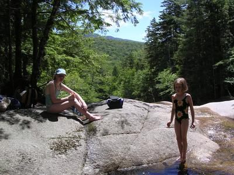

Basin-Cascades Trail

Tuesday, we took a trip to one of our favorite places in the White Mountains: the Basin-Cascades trail in Franconia Notch. The trail parallels the Cascade Brook for about a mile or so. We never walk the trail though, instead we walk up the brook in our bathing suits. The brook is a seemingly endless series of ice cold pools, potholes and waterfalls, perfect for cooling off on a hot day because no matter how hot it is, the water is very very cold. It takes a sturdy constitution to brave the water beyond the knee. Its a great place to go, but keep it secret.
Posted by Unknown on July 08, 2004 at 05:30 PM EDT #
Posted by Brian Casiello on July 20, 2004 at 03:37 PM EDT #